WAI Practice - Feb 2022 - Dubin Bikes Analysis - learnings along the way¶
Summary¶
This blog post covers work done as part of WaiPRACTICE . It explores publically available data on the Dublin Bikes rental scheme in Dublin, Ireland. Although this project is still ongoing, 3 learnings that we share in this blog are:
pandas.DataFrame.value_counts() can be used to gain useful insights from large tabular datasets
SQLite is a really useful database engine
Pandas has useful time and date functionality built in.
Please read on to learn more.
Background¶
The work presented here is part of the WaiPRACTICE initiative run by Women in AI (WAI) Ireland in collaboration with PyLadies Dublin. Women in AI (WAI) is a non-profit organisation working towards gender-inclusive AI that benefits global society. Their mission is to increase female representation and participation in AI. The vision of the WaiPRACTICE initiative is “to support women in Ireland to build competence in Artificial Intelligence by providing access to Learning, Practice and a Community for support”. Teaming up with PyLadies Dublin is a fantastic combination. It allows participants to work together on a group project to practice and develop their skills in Python, a popular language for AI, machine learning and data science, with mentoring and peer-to peer learning. Then, to wrap up, the participants get the opportunity to present and share their learnings and work at a PyLadies Dublin meeting.
To me, this sounded like a fantastic idea and I jumped at the chance to participate. While I’ve been working in the area of data science for the last 10+ years, I have not had much opportunity in recent years to actual sit down and code up and develop models for data science and machine learning problems from scratch. I wanted to jump back in, ensure that my existing skills remained fresh and learn new skills and knowledge on the way. WaiPRACTICE did not disappoint.
Dataset¶
Dublin City has a bike sharing scheme called Dublin Bikes. There are 100+ stations across the city where people can pick up and drop off a bike. Data on bike usage and stations is pubically available. For our analysis, we made use of the quarterly roll up usage data and station data available as csv files from here, covering the time period of 1st April 2019 until 31 Dec 2021.
Exploration¶
Initial Aims¶
Our initial aims were to examine this data and see if it was possible to predict bike usage behaviour. After some initial googling, we discovered that Rachael Breslin had done some actual work on this in the past: What Dublin Bikes data can tell us about the city and its people. This provided us with a great template to build upon and re-examine the data, while learning new skills and techniques along the way.
Initial exploration of bike transaction data¶
See Initial_exploration.ipynb The first step in any analysis is to explore the structure and make up of the data available. pandas.DataFrame.info() is a good starting point. This one command tells us how many rows are present, how many columns are present, the names and types of columns, and how much memory is being used (useful to know if available computer memory is limited).
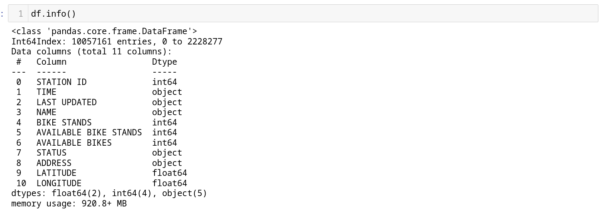pandas.DataFrame.head() gives us a useful overview of the contents:
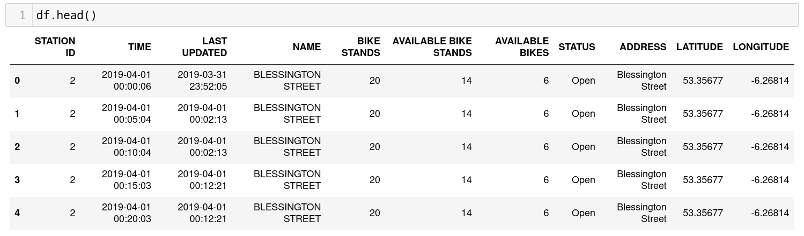pandas.DataFrame.describe() gives some useful summary statistics of the contents:
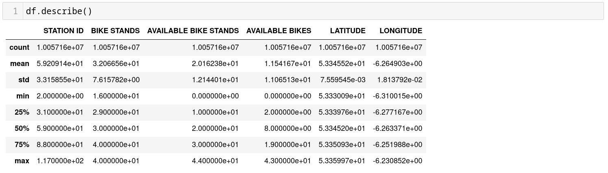Getting an overview of categorical columns¶
While the describe() function is useful for numerical columns, it doesn’t tell us anything about categorical columns like ‘NAME’ or ‘STATUS’. We can make use of pandas.DataFrame.value_counts() to learn more. Below we wrap it within a function, get_frequency_counts(), that takes a Pandas DataFrame, and for each column, returns the number of unique values and the top 10 and bottom 10 most frequently occuring values, for both numerical and categorical data.
1 import pandas as pd
2 def get_freq_counts(df):
3 """
4 Print out the top 10 most frequent and the bottom 10 least frequent categories for each
5 column in the df
6
7 df: Pandas Dataframe. Data of interest
8 """
9 for cols in df:
10 print("======================")
11 print(cols)
12 tot = df[cols].value_counts()
13 print(str(len(tot)) + " unique values")
14 if len(tot) > 10:
15 print("Top 10")
16 print(tot.iloc[:10])
17 print("Bottom 10")
18 print(df[cols].value_counts(ascending=True).iloc[:10])
19 else:
20 print(tot)
Then
import useful
Then
useful.get_freq_counts(df)
For example:
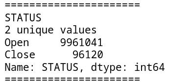It quickly tells us that there are 2 unique values for ‘STATUS’, ‘Open’ and ‘Close’ with ‘Open’ being the most common status, occurring 9.9M times in the data.
For the ‘NAME’ column, it quickly tells us that there are 115 unique bike stations.We can quickly see that SMITHFIELD NORTH station has the most entries, while BROADSTONE has the least. These are things that are not immediately obvious from info(), describe() and head().
Using useful.get_freq_counts() combined with info(), describe() and head() gave us some useful initial observations.
Initial observations:¶
There are 115 unique stations - For these we stations, we have station ids, names, addresses and geographical locations. We can consider these as static pieces of information perhaps create a separate lookup table with these. Note, however, that the _number_ of stations that are active during the time frame under study does change.
‘BIKE STANDS’ is the number of stands associated with a station. ‘AVAILABLE BIKE STANDS’ are the number of bike stands that are empty or have no bike in them. ‘AVAILABLE BIKES’ is the number of bikes currently available for use at the station. In general, ‘BIKE STANDS’ = ‘AVAILABLE BIKES’ + ‘AVAILABLE BIKE STANDS’, however that is not always the case. Sometimes, ‘BIKE STANDS’ > ‘AVAILABLE BIKES’ + ‘AVAILABLE BIKE STANDS’ suggesting that at a given time not all bike stands present at a station are available for use. Some may be temporarily out of order.
‘LAST UPDATED’ and ‘TIME’ are both columns that consist of values that are a timestamp in the form of a string consisting of a date in YYYY-MM-DD format separated by a ” ” from a time in the format of HH:MM:SS. ‘TIME’ contains data from 5 min intervals for a given hour. For analysis, it would be useful to break ‘TIME’ into further columns - ‘date’, ‘time’ and ‘day_of_week’.
Possibly missing data for 18 days in 2019-06, 8 days in 2019-12 and 16 days in 2020-01. Also, unlike the data of later years, the earlier data is not always recorded at 5 min intervals. This discontinuous nature of the earlier data would need to be considered when building forecasting models.
‘STATUS’: 15 different stations had a status of closed during the given time frame
Data pre-processing¶
See data_prep.ipynb Here we made use of SQLite - the small but mighty Database Engine!
What is SQLite?¶
A light weight, serverless database engine. Unlike other database engines like PosgreSQL, MySQL or Oracle, there is no separate server to manage the database. This allows it to be fast and readily embedded into applications on computers, phones and IOT devices, making it one of the most used database engines in its world.
Why use it in a WAI project?¶
How did we use it here?¶
- Pre-process the data The output was 3 csv files:
processed data on a bike station level and
processed bike transaction data i.e. changes at a bike station over 5 min intervals and
processed weather data.
- Create a SQLite database: Install Dbeaver . Open. Create a new database connection using the following steps:
Select the ‘New Database Connection’ icon.
Select ‘SQLite’. Enter the desired name of your database, append at the end by ‘.db’, into Path e.g. ‘wai.db’.
Press ‘Finish’. Your new database now appears on the left hand side of the screen in the Database Navigator section.
Populate the database: Click on your database in the Database Navigator to expand its contents. Right click on Tables -> Import Data and use the Wizard to input your pandas dataframes or outputted csv files as tables of interest.
Share with others: The whole content of your database is now stored in the file is in the Path option of your database connection details. Make a copy of this file, compress it and share with other team members. The notebook data_analysis_and_viz.ipynb shows how to query the shared sqlite file for the required data.
Visualisation¶
See data_analysis_and_viz.ipynb.
Correlation¶
There are a lot of variables to consider. Below, the correlation patterns are not initially apparent.
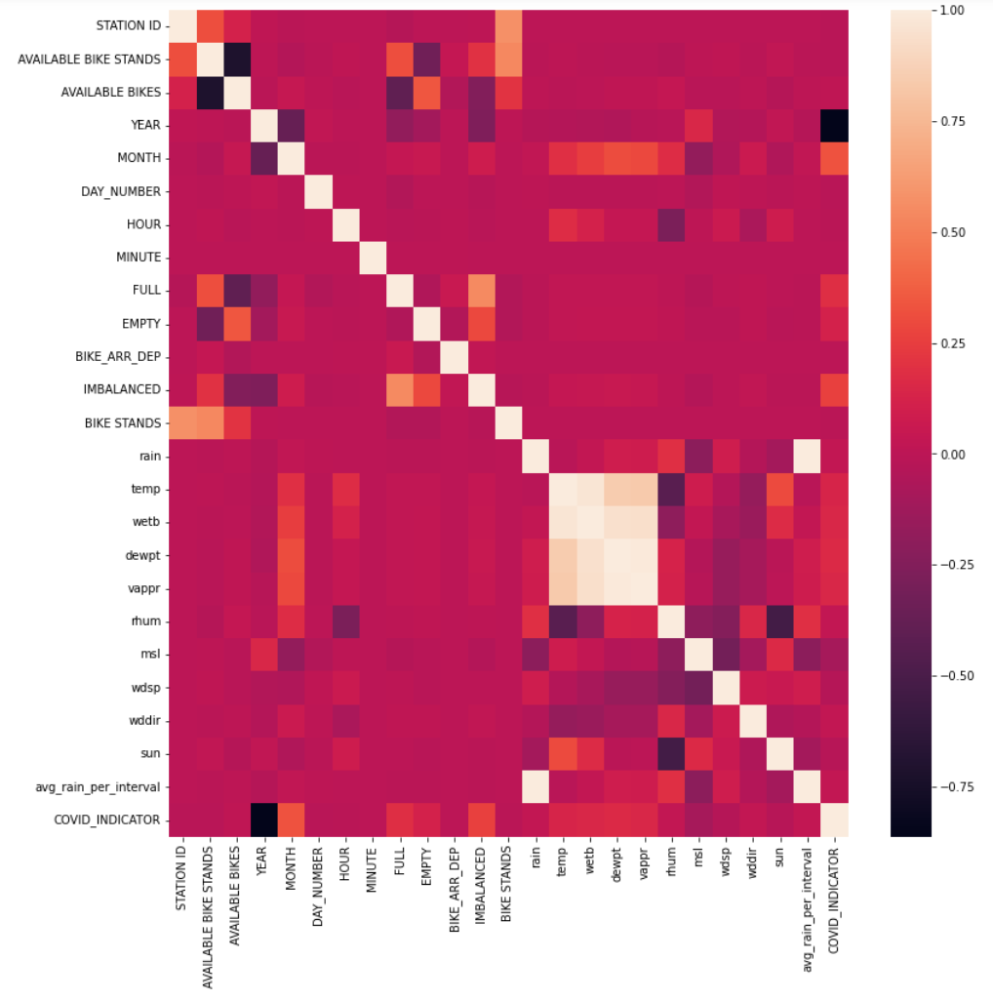Therefore, with a bit of code, we can isolate out variables that have a positive correlation score of at least 0.75:
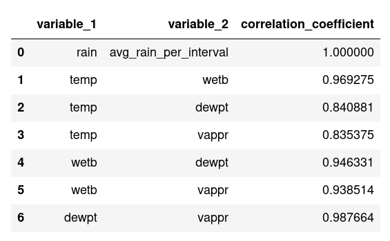Likewise we can isolate out pairs of variabes with negative correlation between them:
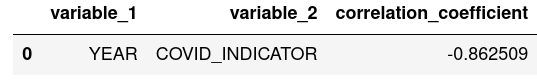There are no surprise or unexpected correlations. There appears to be positive correlation between weather-related variables, while there is negative correlation between the year and whether the Covid-19 virus was widely present in the population. Somethng to bear in mind when selecting features for potential modelling.
Percentage occupancy¶
Percentage occupancy is how many of the available bike stands at a station have a bike in them at a given time. If the percentage occupancy is high, then there are only a few free bike stands availble for people arriving with their bikes. Conversely,if the percentage occupancy is low then there are only a few bikes available for hire at a station. A sudden influx of people to a station in either situation could overwhelm the bike stand or the bike capacity of a station. Therefore, percentage occupancy is a useful metric when trying to understand the network of Dublin Bikes.
From some boxlplots, it appears that cccupancy remains consistent between ~0.15 and ~0.6 across the day and across days of the week, suggesting that on a macro level bikes tend to be adequately balanced across the network.
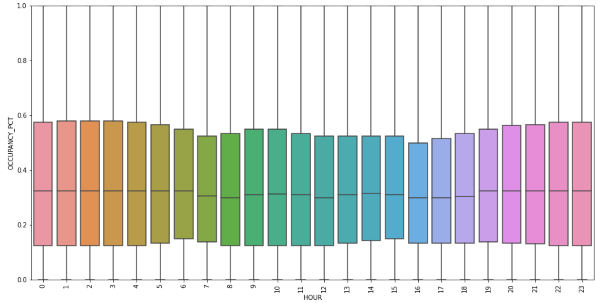 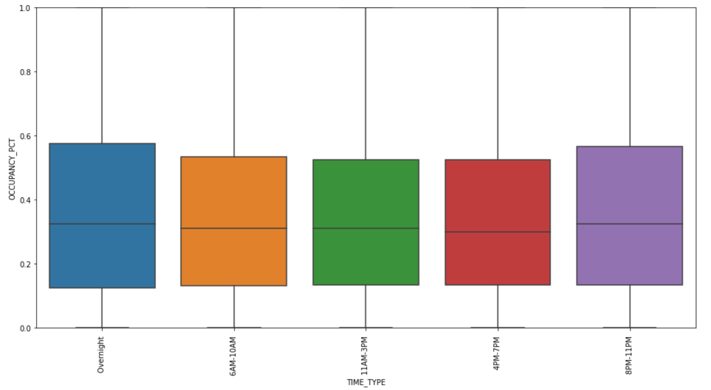 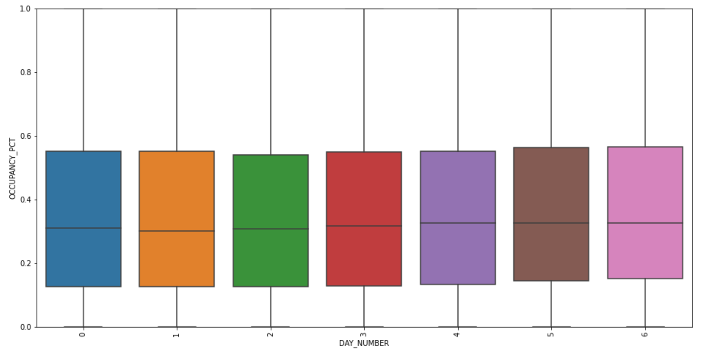Differences are observed across the years, where occupancy appears to fluctuate less as the years go on.
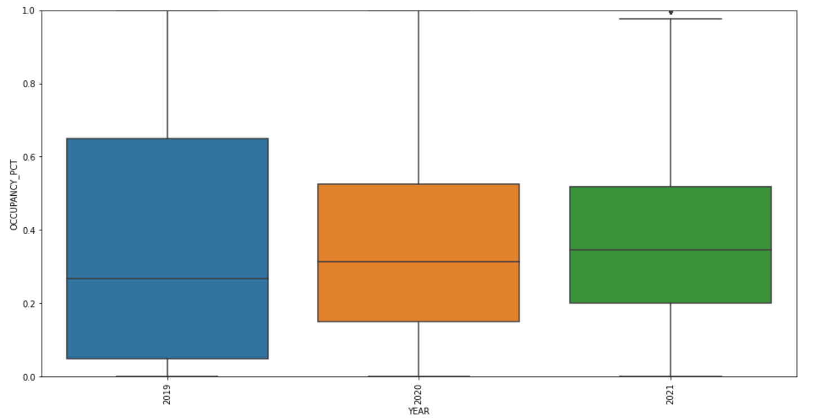However, on a micro or station level, there are noticeable differences in occupancy:
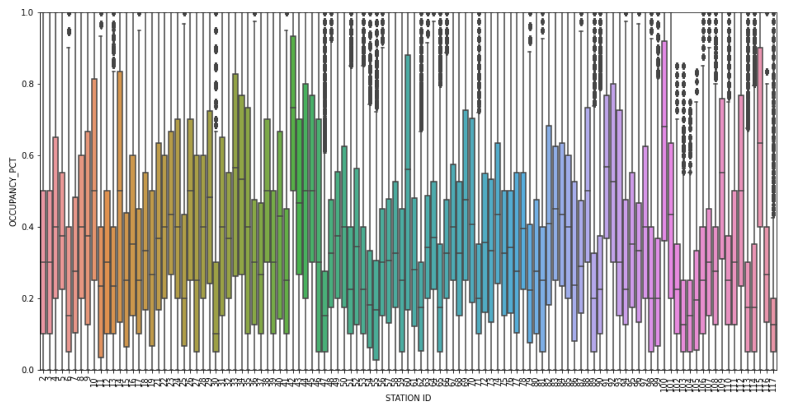The above all suggest that while at a macro level, the network of bikes and stations has a steady-state, there are noticeable differences at the micro level, where we see different patterns of occupancy levels between stations. Looking at the location of individual stations and their proximity to public transport hubs e.g. Heuston station, Luas stations or to offices or 3rd level education institutions would be a interesting piece of future work as it could help shed light on occupancy patterns of individual stations.
Modelling¶
While we have begun to build models to predict bike stand occupancy, at the time of writing this, this is still work in progress. Meanwhile below are some learnings that I have gotten so far from this experienc.
Learnings¶
- I’ve been using Pandas Dataframes for many years, but this is the first time I have had the opportunity to learn and appreciate the useful time and date functionality built into Pandas. For example:
readily create a time range: time_range = pd.date_range(start=’2019-04-01’, end=’2022-01-01’, freq=’5min’)
using datetime objects to represent time stamps in a Pandas dataframe. Previously, I used to store timestamp columns as strings in a Pandas dataframe and use various lines of code to extract out the hour or minute or month from a timestamp. During this project, I learnt the easier way to do so:
1# First convert to a datetime object
2df['DATETIME'] = [dt.datetime.strptime(d, "%Y-%m-%d %H:%M:%S") for d in df["TIME"]]
3# Deconstruct the timestamp further
4df['DATE'] = df.DATETIME.dt.date
5df['YEAR'] = df.DATETIME.dt.year
6df['MONTH'] = df.DATETIME.dt.month
7# Get the day of the week as a number. 0 = Sunday, Saturday = 6.
8df['DAY_NUMBER'] = df.DATETIME.dt.dayofweek
The above is a much quicker way than manipulating strings row by row over a large dataset (why did it take me so long to learn this !?!)
SQLite is a really neat, possibly under-utilised database engine. Combined with Dbeaver, you can set up a database of pre-processed data and share with others with much less effort than standard database solutions.
Conclusion¶
WaiPRACTICE is a fantastic iniative. I thoroughly enjoyed taking part in it and it has helped re-build my confidence in my analysis skills. Although the current round has come to an end, I hope to continue working on the Dublin Bike data set in my own time, creating models for bike demand and network robustness.